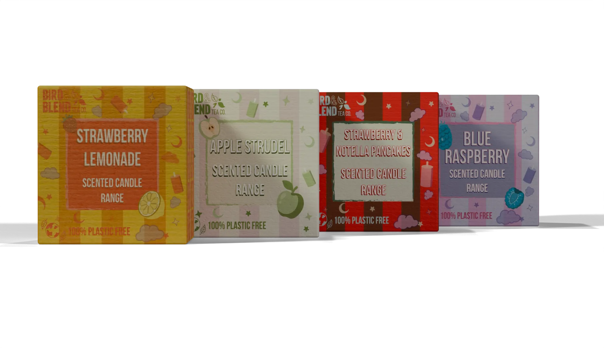
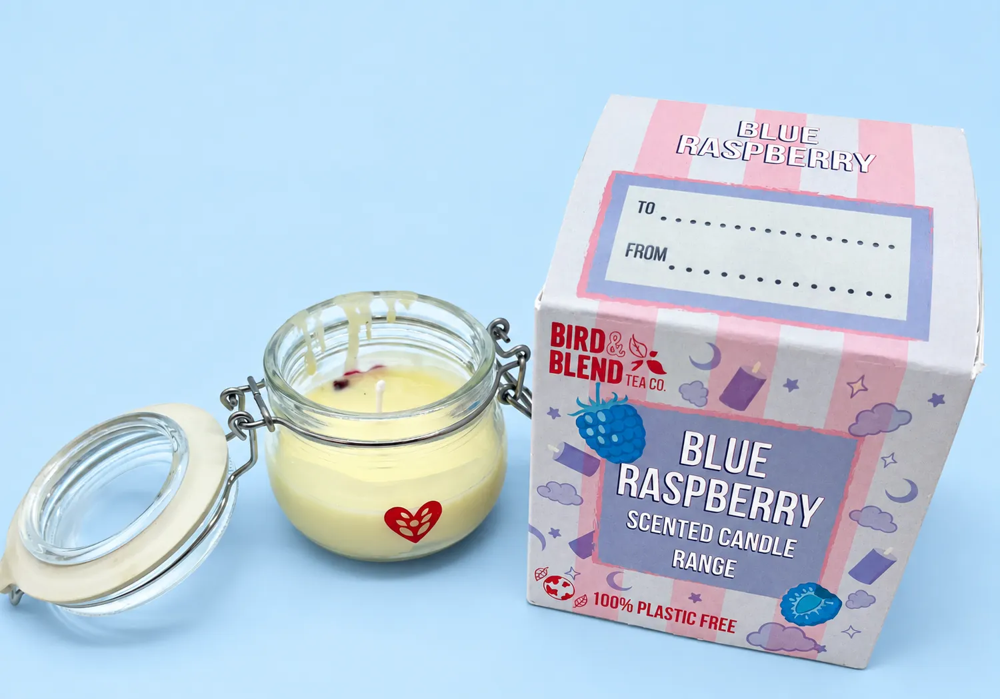

STRAWBERRY LEMONADE
Sun-bright citrus and summer berry.
Tea Light is a premium candle collection for Bird & Blend that carries the tea ritual beyond the cup, turning the brand's best-selling blends into plant-based home fragrance.
Design a premium, plant-based scented product that extends the Bird & Blend tea ritual. It must be vegan and plastic free, meet UKCA/CE safety standards and retail in the brand's £30 to £50 gift price band, with packaging that is giftable, refillable and recyclable.



Bird & Blend is a B Corp tea company known for colourful, playful blends and a strong in-store experience. While watching their Brighton flagship, three in five customers commented on how good the shop smelled, but nothing on the shelves let them take that scent home.
Anxiety and depression among UK adults have risen from 17.6% in 2007 to 22.6% today. Plant-based scents can lower cortisol, and the L-theanine in tea is clinically shown to reduce stress, so the candle creates a two-senses ritual: brew, sip, light and linger.
Sun-bright citrus and summer berry.
Spiced orchard, cinnamon and vanilla.
Indulgent cocoa warmth with hazelnut.
Wild berry: zesty, fresh and cooling.
Each scent was developed by steeping real tea into soy wax. I tested three steep times, and a four-hour, low-temperature steep gave the best balance: the scent held through the whole burn with an even hot throw. That became the working baseline for a production batch made with a UK fragrance house.
My first packaging used a limited palette and little detail, and it lacked the Bird & Blend charm. Going back to their boxes, I brought in colourful illustrated assets and the repeated descending text found across their range, and added a To/From gifting panel on the top.
Every material follows the brand's plastic-free values: a 60/40 soy and coconut wax, an unbleached cotton wick, a refillable recycled glass vessel, and FSC-certified kraft board printed with soy inks and held together with tab locks instead of glue.